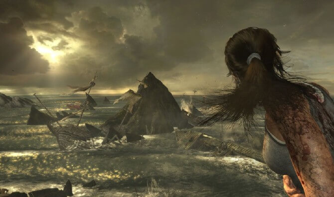
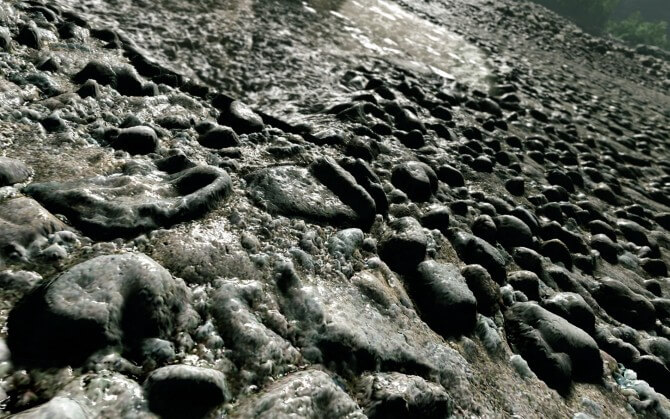

Часть 1: Новомодные свистелки

Вступление
Ты вступление не читаешь. Тебе оно не интересно. Мне тоже не интересно описывать, кто я и зачем пишу. Но надо. Короче, крути вниз.
Всем привет. Наблюдая в недавнем стриме по MATRIX: Path of Neo за тем, как Вася с Максом рассуждают на тему LOD'ов, я понял одну интересную вещь: в современных играх меню с настройками графики представляет собой что-то совершенно непотребное. Оно либо жутко кастрировано, либо открывает для пользователя такую простыню непонятных слов, в которой и чёрт ногу сломит.
Ладно, я — сам работаю в игрострое. Так что мне-то понятно, какая настройка за что отвечает. Но порой тоже не без трудностей. А вот простых игроков, наверное, при чтении всех этих названий одолевает тихий ужас. Причём, мир не стоит на месте, и новые графические «фичи» появляются каждый год, а то и месяц. Недавно — вон, свет увидел TressFX.
Так что дальше будет только больше, и без посторонней помощи разобраться во всём этом техническом безобразии в скором времени уже просто не получится. Разработчики игр упрощают это дело, как могут, по максимуму убирая из меню всё лишнее. Вот только беда в том, что это вовсе не «лишнее», и надобность той или иной технологии зависит от того, насколько мощное у игрока железо. В консолях это самое железо известно заранее, и игроделы могут просто сами подобрать оптимальные параметры, скрыв их от глаз игроков. Но вот сделать такое для ПК — в принципе невозможно. Тем временем, меню всё разрастается и разрастается… Не удивлюсь, если через пару лет в сингле какого-нибудь ААА-шутера в туториал добявят объяснение графических настроек. А пока — я постараюсь помочь всем интересующимся сориентироваться во всём этом многообразии.
Итак, ближе к делу. Рассказ о технологиях пойдёт в порядке их «свежести». А начнём с…
AMD TressFX
Эта технология — просто идеальный пример одного тренда, который прослеживается в игровой индустрии испокон веков. Суть его вот в чём: игровая индустрия сама по себе не придумывает практически никаких технологий. Просто время идёт, мощности железа растут. И со временем, пускай и с какими-то упрощениями, становится возможным делать в реалтайме то, что раньше было доступно только в «тяжёлом» рендере… ну, то есть, в том, что геймеры именуют «CGI-роликами». Иными словами, практически все технологии, появившиеся в играх — всего лишь упрощённое заимствование того, что уже давным-давно широко используется в кино и изучено вдоль и поперёк. Собственно, что такое TressFX? А очень просто: это всего лишь готовый кусок программного кода от AMD, с помощью которого можно считать волосы на видеокарте. Вообще 3D-шники умеют делать волосы уже много-много лет. Ты их не раз видел во всяких 3D-мультиках.
Просто раньше это делалось на проце и требовало этих самых процов дофига. Естественно, ни о каком реалтайме — и речи быть не могло. Поэтому в играх причёски в любом случае делались такими полигональными «лоскутками», на которых волосы были просто текстурой.
А теперь гигагерцы выросли, видюхи растолстели. И игровые программисты могут просто взять этот готовый TressFX и воткнуть его в игру: волосы будут считаться в реалтайме на GPU. Считай, ничего делать не надо: покрутил пару параметров, настроил длину — и очередная пара косичек готова. Причём, на видеокарте считается не только то, как эти волосы выглядят, но и их физика. То есть, как движется каждый волосок. В будущем это даст гораздо большую реалистичность стрижек у персонажей: они будут выглядеть, прям как настоящие. Но пока что видюхи попросту не настолько сильные, чтоб держать в кадре хотя бы две таких причёски. Ну то есть даже на топовом Радеоне на расчёт одной такой шевелюры уходит столько же ресурсов, сколько на всю остальную сцену. В результате — игра тормозит, а волосы глючат (и выглядят хуже, чем сделанные по старинке). Что недавно вышедшая Лара наглядно продемонстрировала. Так что на сегодняшний момент TressFX нужна не столько игрокам, сколько разработчикам. Это банально проще: не париться с созданием геометрии и текстур, а считать волосы по физике, «в лоб».
Tesselation
Если ты более-менее интересуешься графоном, то я уверен, что уж это слово ты слышал. Вот только, как я заметил, многие игроки не до конца понимают смысл этой технологии. Большинство считает, что это «такая штука», которая позволяет вместо плоского пола усыпать его камнями. И всё. Вообще, да. Но она может не только это. Сама по себе тесселяция пришла в DX11 из того же самого «тяжёлого рендера», из которого пришли и волосы, под ручку с рассеянным светом. К счастью, в отличие от TressFX эта технология гораздо лучше применима. Что она делает? А очень просто: интерактивно, прямо во время игры разбивает один большой полигон на кучу маленьких. По сути, благодаря ей можно сделать так, чтоб количество полигонов в кадре всегда было примерно одинаковым. Независимо от того, насколько сильно мы приблизились к поверхности. Объект очень далеко? Ну и отрисовывается в виде исходного кубика. Камера наехала вплотную? Каждую исходную плоскость разбиваем 100500 раз.